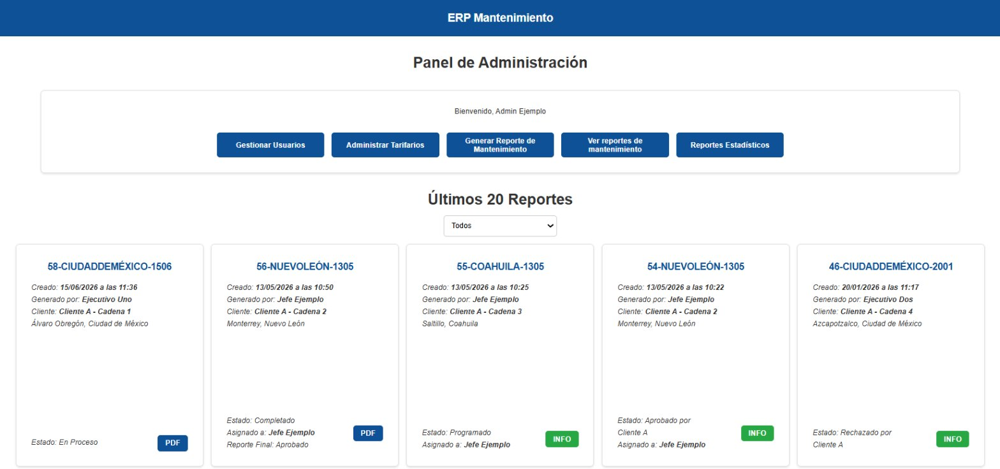
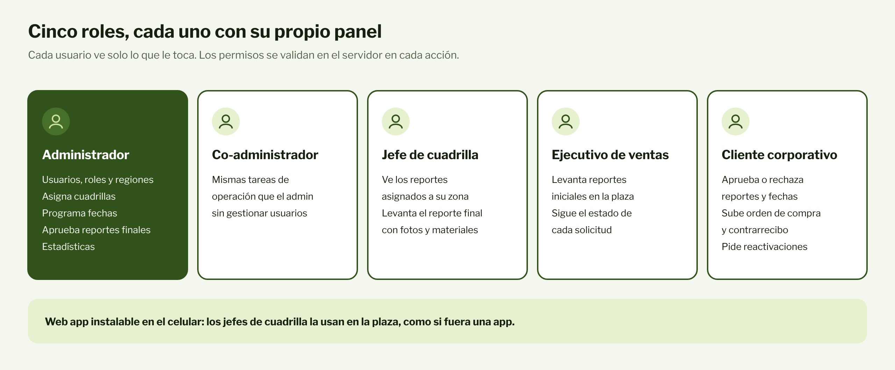
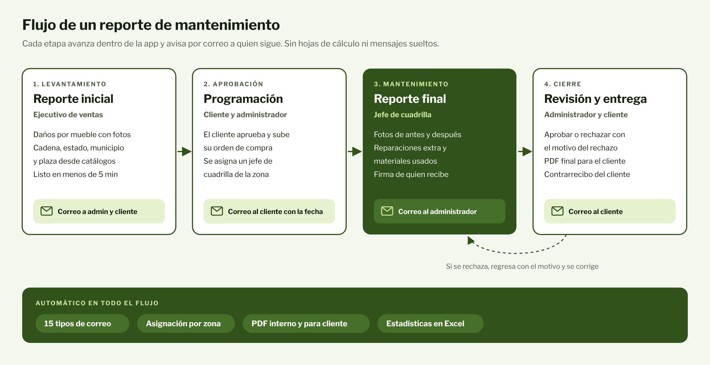
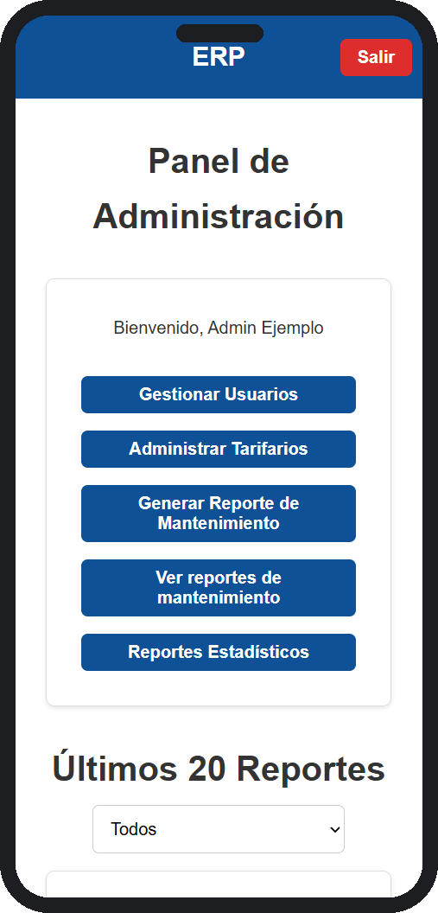
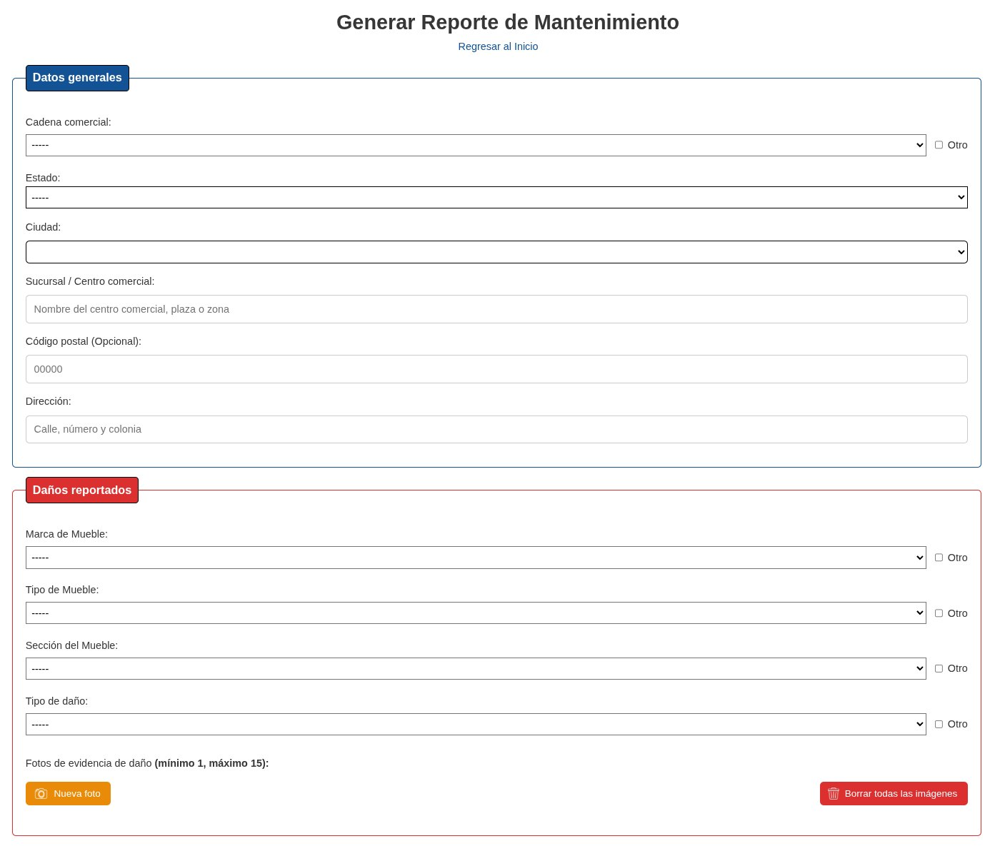
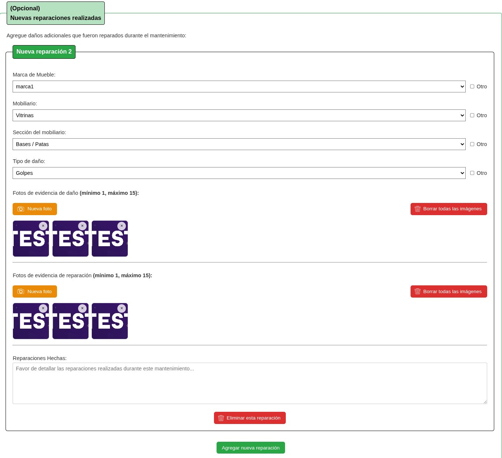
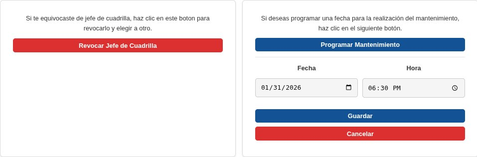
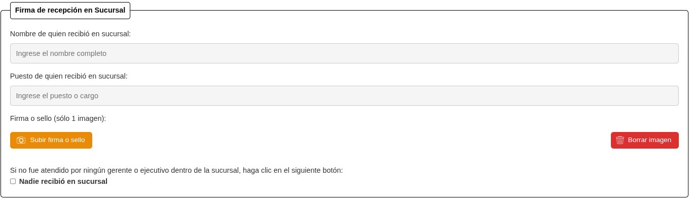
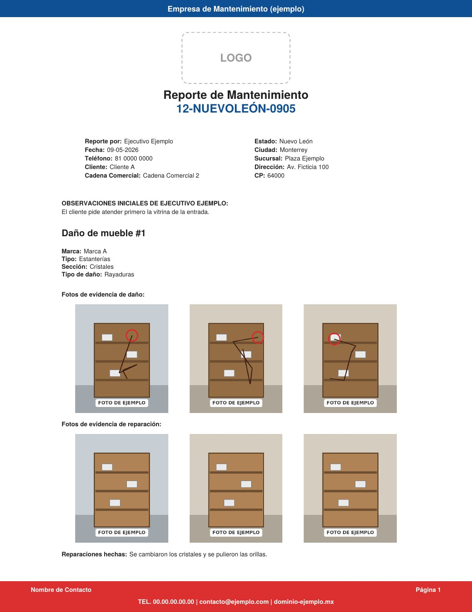
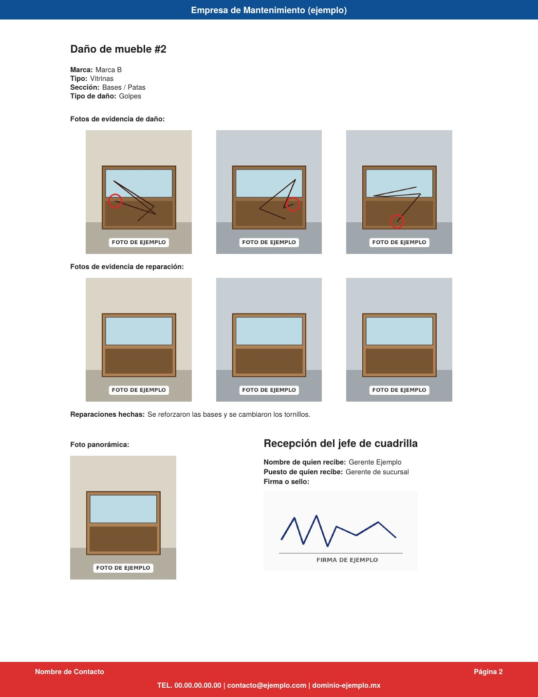

Freelance
Aplicación web ERP
Una web app a la medida que lleva cada solicitud de mantenimiento desde que se levanta en la plaza comercial hasta que el cliente recibe el trabajo terminado.
Proyecto confidencial. A petición del cliente, sus datos se mantienen confidenciales y el código no se puede publicar. Las capturas usan datos ficticios.
- Rol
- Desarrollador Full Stack y coordinador
- Periodo
- Dic 2025 - Feb 2026
- Usuarios
- +60 trabajadores y +20 clientes
- Ahorro
- 1 a 2 h al día en reportes
- Stack
- Django, Tailwind CSS, PostgreSQL, Docker, Google Cloud

Contexto
El cliente es una empresa de consultoría de imagen que instala, repara y da mantenimiento a mobiliario comercial (vitrinas, mostradores y exhibidores) en plazas de todo México, con cuadrillas propias y clientes corporativos.
Antes, los reportes y solicitudes vivían en presentaciones de PowerPoint, hojas de Excel, documentos de Word e incluso mensajes de WhatsApp:
- Se perdían reportes y era difícil saber qué fotos y datos pertenecían a cada uno.
- Los jefes de cuadrilla no tenían una sola fuente para saber qué reparar, dónde y cuándo.
- El dueño no podía dar seguimiento al estado de cada trabajo ni a los materiales usados.
- Cada reporte tenía un formato distinto y armarlo tomaba mucho tiempo.
La empresa necesitaba orden, comunicación más rápida y documentación estandarizada.
Mi rol
Coordiné el proyecto de principio a fin. Levanté los requerimientos con el cliente, definí los roles y el flujo de trabajo, coordiné al equipo de desarrollo, desarrollé la aplicación y administré la infraestructura en Google Cloud hasta la entrega.
Qué construí
- Roles: cinco perfiles, cada uno con su panel y permisos.
- Reporte inicial: formulario guiado con catálogos y fotos por daño.
- Aprobación: el cliente aprueba, sube su orden de compra y confirma la fecha.
- Reporte final: fotos de antes y después, materiales y firma de quien recibe.
- PDF automáticos: versión interna y versión para el cliente.
- Estadísticas en Excel: cada mueble atendido, listo para analizar.
- Web app instalable: los jefes de cuadrilla la usan desde el celular.

Flujos automatizados
- Notificaciones por correo en cada etapa: 15 tipos de correo avisan a la persona correcta cuando un reporte se crea, se aprueba, se programa, se completa, se rechaza o se reactiva. También hay recordatorios para que el cliente suba su orden de compra y su contrarrecibo.
- Asignación por zona: al asignar un reporte, la app solo muestra a los jefes de cuadrilla que cubren el estado donde está la plaza.
- Conteo estadístico automático: los datos de cada reporte terminado alimentan el reporte estadístico sin capturar nada a mano.

Así se ve
Capturas de la aplicación con datos ficticios. Los nombres, clientes, marcas y el logo están reemplazados.







Infraestructura
La aplicación corre en contenedores Docker sobre Cloud Run, con la base de datos en Cloud SQL (PostgreSQL), las fotos y los PDF en Cloud Storage y despliegues con Cloud Build.
Retos
- Fotos de iPhone: los celulares subían fotos HEIC que el navegador y los PDF no leían. Las convierto en el servidor al subirlas.
- Costo contra rendimiento: probé varias configuraciones de Cloud Run hasta encontrar una barata que soportó pruebas de estrés de 10 reportes por minuto sin errores.
- Un flujo, cinco roles: cada etapa valida en el servidor quién puede avanzar el reporte, para que nadie apruebe o edite lo que no le toca.
Tecnologías
Resultado
1 a 2 h
ahorradas al día en crear y leer reportes, según el cliente. Hoy los reportes son estandarizados y se crean y llenan en menos de 5 minutos. La app la usan más de 60 trabajadores, los dueños de la empresa y más de 20 clientes, y cada etapa del trabajo llega con su notificación por correo.
Confidencialidad
Por acuerdo con el cliente, su nombre, el dominio de la aplicación, el código y los datos de sus usuarios no son públicos. Los diagramas son propios y las capturas usan datos ficticios, con permiso del cliente.